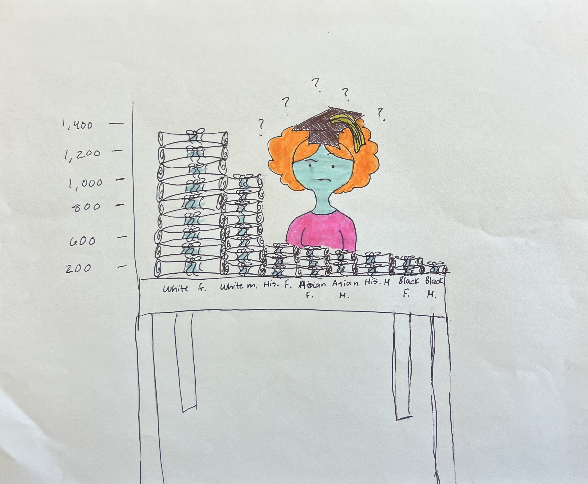

US Census data reveals truths about the difference in educational attainment across racial groups
The US Census published their findings regarding the highest reported educational attainment by racial group in the United States during the year of 2022. The group with the highest amount of bachelor's degrees attained between the ages of 18-24 was White women, who account for almost 40% of all bachelor's degrees attained that year.
In order to represent the difference in educational attainment by race, I decided to incorporate a column chart, which had the most impactful visualization as the descending order of attainment is clear and concise. In order to make the dataset more visually creative, I interpreted the column chart as stacks of diplomas, and made the x-axis a desk. The visualization was a bit bland at first, so I added in a woman with a graduation cap, both to add character and to make the diplomas more conspicuous. The creative viz makes me want to make a more visually appealing chart for my final.
